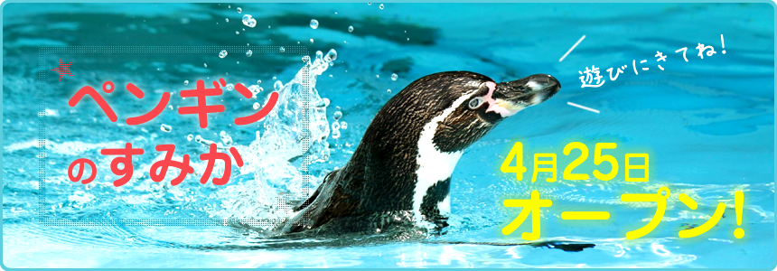
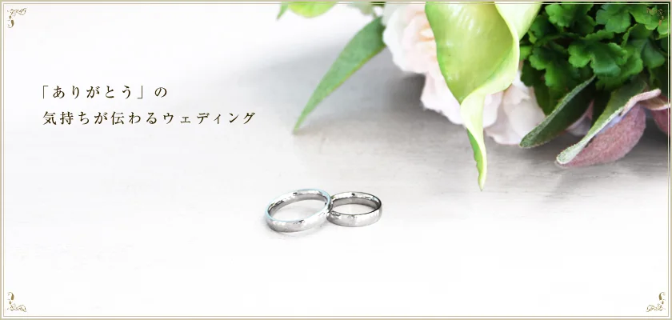
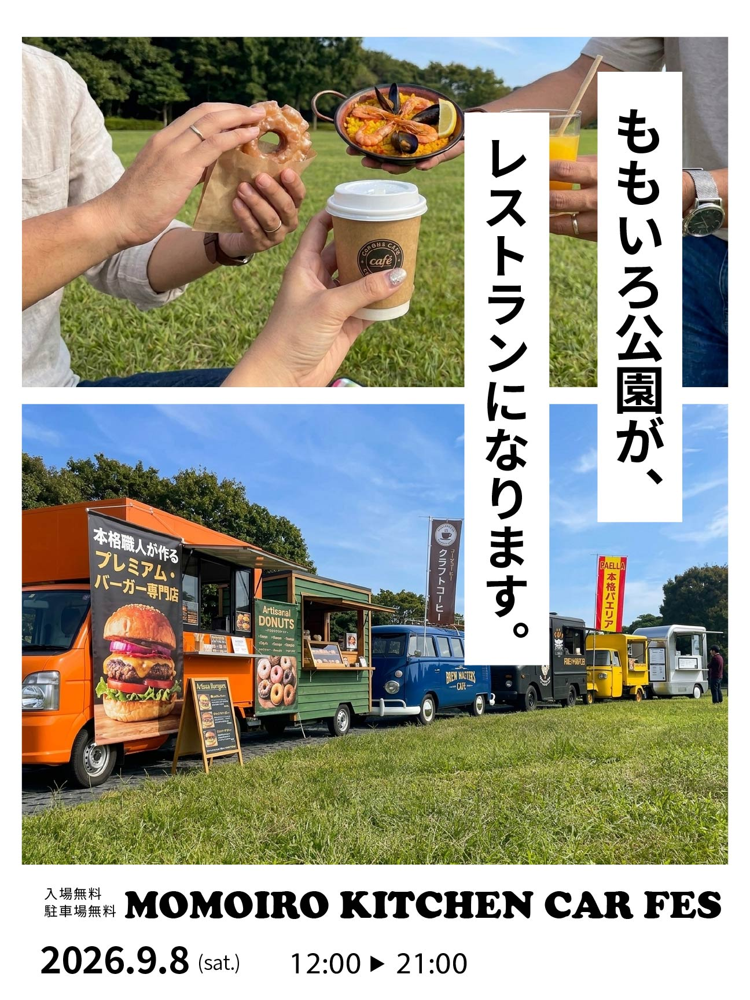

HTML
Webページの構造を、意味を意識して組み立てます。
WEB DESIGN & DEVELOPMENT
ユーザー目線と、これまでの経験を活かして
見やすく・使いやすく・目的に届くWebサイトを制作します。

 About Me
About MeABOUT ME
これまで営業・マネジメント業務に携わり、お客様のニーズを汲み取る提案力や、円滑に業務を進めるための調整力を培ってきました。
Web制作の職業訓練校では、HTML・CSS・JavaScript・PHP・WordPress・Figmaなどを学び、Photoshop・Illustrator・Canvaについても独学でスキルを磨いてきました。
制作にあたっては、まず「誰に、何を、何のために伝えるのか」を明確にすることを大切にしています。目的をしっかりと捉え、使う人にとって分かりやすく、伝えたい想いがきちんと届くWebサイトを目指しています。
詳しく見る →茨城の落ち着く自然が好き。
オーガナイザー資格あり。TSUTAYAなどで月に一度、子どもたちへのティーチングが楽しみ。
自宅に懸垂器を購入し、日々トレーニング中。
ジャンルは雑食。月に5冊は読む。
SKILLS
デザインからコーディング、運用まで。
目的に合わせて幅広く対応できます。
Webページの構造を、意味を意識して組み立てます。

レスポンシブ対応や見やすいレイアウトを制作します。

動きのあるUIや操作しやすい仕組みを実装します。

テーマ制作・カスタマイズや更新作業に対応します。

ワイヤーフレームや画面デザインを作成します。

バナーやSNS向けの画像・コンテンツを制作します。

写真の補正や画像の加工・調整を行います。

図形や文字を使ったグラフィックを制作します。
WORKS
制作の目的や工夫したことも紹介していきます。

動物園の架空サイト。複数ページとスライドショーを制作。
詳細を見る ↗
結婚式場をテーマにした架空のWebサイト。
詳細を見る ↗本ポートフォリオサイト。GitHub Pagesで公開。
詳細を見る ↗集客相談会を告知する広告バナー。
詳細を見る ↗
キッチンカーイベントの告知ポスター。
詳細を見る ↗該当する制作実績はありません。
ご覧いただき、
ありがとうございます。
WORKS DETAIL